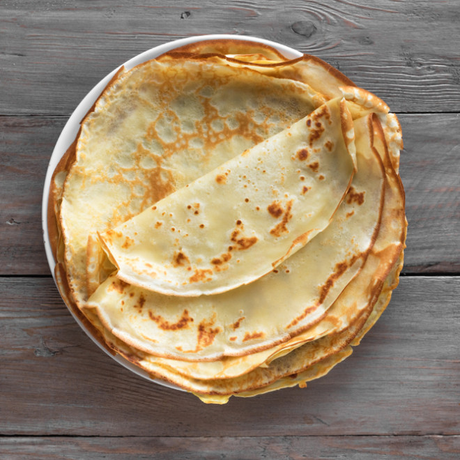

< To Recipe List
Crêpes

Description
This French delicacy is extremely versatile, as it can be filled with virtually anything -- fruits, pudding, mousse for desserts as well as vegetables and meats for dinner. No need to add more oil each time unless the pan begins to stick. Freeze extra crepes for later use.
Ingredients
- 2 eggs
- 2 eggs
- ⅔ cup all-purpose flour
- 1 pinch salt
- 1 ½ teaspoons vegetable oil
Steps
- In a blender combine eggs, milk, flour, salt and oil. Process until smooth. Cover and refrigerate 1 hour.
- Heat a skillet over medium-high heat and brush with oil. Pour 1/4 cup of crepe batter into pan, tilting to completely coat the surface of the pan. Cook 2 to 5 minutes, turning once, until golden. Repeat with remaining batter.